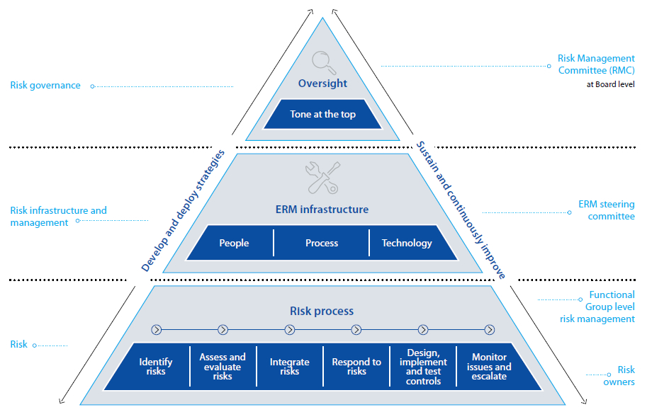

Considering the exposure to risks of competitiveness and volatility of business environments, probable customer migration to other operators, increasing substitution offerings, fast changing technology, economic uncertainties and possible cyber-attacks; SLT’s staff have been made vigilant for visualising the business critical risks through the ERM process. In 2014, the Board of Directors has taken another step to keep ERM tone on by setting up of a Risk Management Committee (RMC) at Board level chaired by a Director to drive the ERM process within SLT more efficiently and effectively.
Now risk management culture is maturing at functional units as well as in project management at SLT. Over the past several years since introduction of ERM in 2010, ERM has become an important Business-As-Usual (BAU) process. ERM has enabled us to escalate business critical risks identified by functional groups to appropriate levels. In addition to the RMC, a Risk Management Steering Committee (RMSC) chaired by CEO too, has been set up under the guidance of the RMC and is in operation. Since the latter part of 2014, top business critical risks are escalated to the RMC. At RMC, the escalated risks are scrutinised and directions are given to risk owners to mitigate the identified risks.
Table below summarises top business critical risks – both industry specific and Company specific, a brief description of each risk, their potential impact, our assessment of the level of severity of each risk and actions taken to mitigate them.

| No. | Type | Category | Risk description | Impact | Severity | Mitigation factors |
| 1. | Industry | Operational | Telecom industry experiences the need of new technological convergence and upgrading the networks to survive in the market. With significant market powers through various acquisitions and mergers, prevailing competition structure pressurises telco operators. | Threat to growth of business and market share. | High | Risk has been visualised and possible actions are being taken to mitigate the risk. |
| 2. | Industry | Operational | Telco and non-telco business entities developing optical fibre network leads to lower returns on investment of National Backbone Network (NBN) developed by SLT aligning with national ICT development programme. | Returns on investment may not meet the expectations. Loss of business opportunities. Duplication of investment and increase in industry costs of network portion. |
Medium | SLT continuously deals with TRCSL and other operators to emphasis the objectives of NBN and on the reduction of industry attractiveness due to non-telcos developing optical fibre network for possible commercial purposes. |
| 3. | Company | Legal | SLT is subject to a comprehensive range of legal obligations and as a result, SLT is exposed to many forms of legal risks - - Custom duties and legal obligations on import of goods |
Negative impact on brand image. Financial risk |
High | SLT was a party to several court and out-of-court proceedings. A summary of material litigation during 2014 and their outcomes, if known, are listed on Note 32 in financial statements. SLT handles legal proceedings and seeks support from external consultants to mitigate the risks with high level of impact when required. |
| 4 | Industry | Regulatory | Growths of Wireless High Speed Broadband Solutions (LTE) are exponential and non-availability of fair distribution of spectrum among operators has impacted competition adversely. | Unfair competition and disadvantage over the broadband speeds supported. | High | SLT consistently lobbies TRCSL on additional spectrum allocations. |
| 5. | Company | Legal, business and administration | Not having proper titles for lands and buildings owned by SLT will lead to loss of assets, distort status of final accounts and securing the property. | Constraints imposed on development of SLT- owned lands and risk of defending title in the event of dispute. | Low | Initiatives have been taken to publish a Gazette Notification regarding the relevant SLT land through the Ministry of Lands as and when required. |
| 6. | Industry | Regulatory | Absence of a legal framework to protect telco operators being charged/taxed by local authorises/other Government agencies without consultation of the regulator on development of telecommunication infrastructure. (e.g., Thoroughfare Act, Central Environment Act etc.). | Costly network development becomes a constraint for green area development. Leads to incur additional costs for physical infrastructure and unfair and unbalanced cost structures in the industry. |
Medium | The requirement of a legal framework on preventing of imposing charges, fees, rates etc. by Government agencies on network development by telcos has been communicated to policy makers through national budget proposals for year 2015. |
| 7. | Industry | Information security risk | Possible cyber-attacks to business critical information systems and network elements may cripple the Company operations. | Business continuity. Loss of Customer confidence. Loss of revenue. |
High | Information Security (IS) policy is in place and implemented organisation wide. Information Security Steering Committees (ISSC) and Information Security Management Forum (ISMF) have been formed andmajor incidents are reported to them. Vulnerability assessments are continuously carried out and advices on threat/incident information are obtained from experts such as TechCERT and Sri Lanka CERT. |
| 8. | Industry | Regulatory | Drawing fibre in the last mile by telco service providers without legal rights is a threat to SLT’s wholesale and retail businesses. | Threat for SLT’s business. Revenue loss. | Medium | SLT has raised its concerns to TRCSL and placed a complaint against the license violation. |
| 9. | Industry | Business | OTT players and grey operators coming up with substitutes is a threat to SLT’s products and services. | Loss of revenue. Limits the market growth opportunities. Inability to achieve the expected returns on investment. |
High | Initiatives to introduce new business models and diversify to new areas. Lobbied with TRCSL and Media Ministry at joint industry level to curb grey operators in pay TV industry. |
| 10. | Company | Operational | Pressures to absorb the outsourced staff to SLT. | Threat of increased costs for SLT. Disturbances to operations carried out by outsourced staff. |
High | Initiatives taken to make all stakeholders (HCS staff, Government) aware on the legal position. Actions are taken to revisit staff outsourcing policy. |
| 11. | Company | Business | Loss of business opportunities and revenue avenues due to competitors joining new submarine cable consortiums and providing international connectivity [e.g., landing of Bay of Bengal Gateway (BBG) Cable in Colombo in year 2015]. | Threat for SLT’s wholesale business and potential revenue loss. | High | Actions have been taken to revisit the strategies related to international connectivity business. |
| 12. | Company | Operational | Risks in successful completion of business critical projects within the planned timeframe, budget and quality, due to the inability of correctly identifying the project scope, external constraints and its deliverables at the planning stage. | Cost overruns and resources are not effectively utilised. Delays in project delivery leading to customer dissatisfaction. |
High | Project managers are given training on project management best practices to improve their skills and competencies. SLT conducts supplier risk analysis as part of the sourcing strategy and where possible, take actions to reduce risk, such as dual/multiple sourcing where appropriate whilst ensuring not to contract with too many suppliers which may expose SLT to unnecessary risks. Furthermore, SLT ranks vendors, continuously monitors their capabilities, business continuity, assess their risk levels and take appropriate mitigation plans. This risk mitigation approach is used for both project implementation as well as in business supply-chain related operational activities. |
| 13. | Company | Business | Diversification into new business areas of education and property management. | Risk on returns on investment in acquiring required expertise and talents and other resources and competition from other well-established existing high education institutions. Risks on returns on investment and identifying correct customer requirements. |
Medium | Revisit SLT’s subsidiary strategy. Strategies are formulated based on extensive market research conducted to identify competition and market needs. |